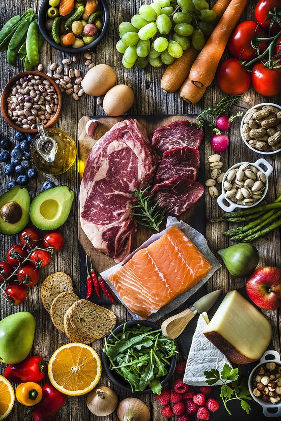
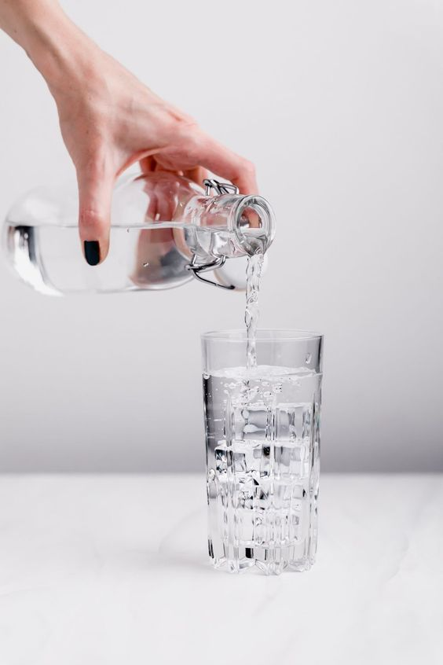

Beslenme
sağlıklı bir yaşam için gerekli olan besinleri belirli ölçülerde ve düzenli olarak almaktır. Burada dikkat edilmesi gereken durum sağlıklı beslenme için doğru besinleri seçmektir.
Antrenman
Spor yapmak sağlıklı yaşamın bir diğer şartıdır. Spor yapmak kan akışını hızlandırır. Vücudun oksijenlenmesini sağlar. Yeterince oksijenlenmiş bir vücut daha canlı ve zihinde olur. Metabolizmayı hızlandırır ve yağ yıkımını gerçekleştirir.

Su İçmek
Sağlıklı yaşamın başında dengeli beslenmek gelir. Ama bundan da önce gelen en önemlisi su içmektir. İnsan vücudu yapısı gereği %65 sudan oluşmaktadır. Günlük olarak da 2 ile 3 lt arasında su kaybeder. Bu oranı dengelemek adına günlük alınması gereken su oranı da 2-3 lt arası olmalıdır.
Uyku Düzeni
Sağlıklı yaşamın şartlarından biri de düzenli saat aralıklarında yapılan yeterli ve kaliteli bir uykudur. Yetişkin bir insanın günlük ortalama uyku saati 6-8 saat olmalıdır.